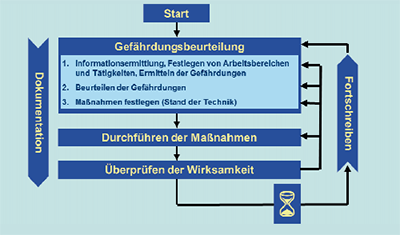

(1) Die Gefährdungsbeurteilung ist die systematische Beurteilung (Ermittlung und Bewertung) relevanter Gefährdungen der Beschäftigten mit dem Ziel, erforderliche Maßnahmen für Sicherheit und Gesundheit bei der Arbeit festzulegen. Grundlage ist eine Beurteilung der mit Exposition durch Lärm verbundenen Gefährdungen.
(2) Folgende Prozessschritte sind bei der Gefährdungsbeurteilung, der Durchführung von Schutzmaßnahmen und deren Wirksamkeitsprüfung zu berücksichtigen:

Abb. 1: Prozessschritte bei der Durchführung der Gefährdungsbeurteilung
(3) Die Dokumentation der Gefährdungsbeurteilung ist im Abschnitt 10 beschrieben.
(4) Je nach Aufgabenstellung kann es sinnvoll sein, die Lärmeinwirkung ortsbezogen oder personenbezogen zu betrachten und dementsprechend einen ortsbezogenen oder personenbezogenen Lärmexpositionspegel zu unterscheiden (TRLV Lärm, Teil 2 „Messung von Lärm“, Abschnitt 5.2). Bei der ortsbezogenen Beurteilung erfasst man den auf einen Ort einwirkenden Lärm so, als wolle man die Belastung für eine Person ermitteln, die sich dort über die gesamte Arbeitsschicht aufhält. Bei der personenbezogenen Beurteilung ist der zu bestimmende Lärmexpositionspegel ein Kennwert, um den auf einen einzelnen Beschäftigten oder eine Gruppe von gleichartig belasteten Beschäftigten einwirkenden Lärm zu beschreiben.
(5) Der Arbeitgeber darf bei Expositionen der Beschäftigten durch Lärm die Tätigkeit erst aufnehmen lassen, nachdem eine Gefährdungsbeurteilung vorgenommen wurde und die daraus resultierenden Maßnahmen des Arbeitsschutzes ergriffen wurden.
(6) Die Gefährdungsbeurteilung muss bei maßgeblichen Änderungen der Lärmexposition oder neuen Erkenntnissen erneut durchgeführt werden. Anlässe hierfür können insbesondere sein:
(7) Die Verantwortung für die Durchführung der Gefährdungsbeurteilung liegt beim Arbeitgeber.
(8) Werden für die Durchführung von Arbeiten Fremdfirmen beauftragt und besteht die Möglichkeit einer gegenseitigen Gefährdung durch Exposition gegenüber Lärm, haben alle betroffenen Arbeitgeber bei der Durchführung der Gefährdungsbeurteilung zusammenzuwirken und sich abzustimmen.
(1) Der Arbeitgeber hat sicherzustellen, dass die Gefährdungsbeurteilung nur von fachkundigen Personen durchgeführt wird. Verfügt er nicht selbst über die erforderliche Fachkunde und die entsprechenden Kenntnisse zur Beurteilung der Gefährdung durch Lärm, hat er sich fachkundig beraten zu lassen. Fachkundige Personen können insbesondere die Fachkraft für Arbeitssicherheit und der Betriebsarzt sein. Zur Beurteilung der Gefährdung ist es erforderlich, dass die für den Arbeitgeber tätig werdenden fachkundigen Personen über die notwendigen betriebsspezifischen Kenntnisse verfügen. Der Arbeitgeber muss den fachkundigen Personen alle für die Gefährdungsbeurteilung erforderlichen Unterlagen und Informationen zur Verfügung stellen.
(2) Fachkundige im Sinne § 5 LärmVibrationsArbSchV für die Durchführung der Gefährdungsbeurteilung sind Personen, die aufgrund ihrer fachlichen Ausbildung oder Erfahrungen ausreichende Kenntnisse über Tätigkeiten mit Lärmexposition haben und mit den Vorschriften und Regelwerken soweit vertraut sind, dass sie die Arbeitsbedingungen vor Beginn der Tätigkeit beurteilen und die festgelegten Schutzmaßnahmen bewerten und überprüfen können. Umfang und Tiefe der notwendigen Kenntnisse sind häufig in Abhängigkeit von der zu beurteilenden Tätigkeit unterschiedlich. Die Gefährdungsbeurteilung bei Exposition gegenüber Lärm verlangt Kenntnisse
(1) Der Arbeitgeber darf mit der Durchführung von Messungen nur Personen beauftragen, die über die dafür notwendige Fachkunde und die erforderlichen Einrichtungen verfügen. Fachkundige für die Durchführung von Lärmmessungen besitzen aufgrund ihrer fachlichen Ausbildung oder Erfahrung ausreichende, dem Stand der Technik entsprechende Kenntnisse in der akustischen Messtechnik und über den Einfluss der Produktionsabläufe und Tätigkeiten auf das Messergebnis. Die entsprechenden Anforderungen sind in der TRLV Lärm, Teil 2 „Messung von Lärm“ beschrieben.
(2) Die erforderliche Fachkunde für die Durchführung von Lärmmessungen am Arbeitsplatz kann u. a. durch Teilnahme an einer geeigneten Fortbildungsveranstaltung von z. B. Technischen Akademien, Unfallversicherungsträgern oder ähnlichen Institutionen erworben werden.
(1) Grundsätzlich muss der Arbeitgeber für alle lärmexponierten Beschäftigten eine Gefährdungsbeurteilung durchführen. Zur Vereinfachung kann der Arbeitgeber Beschäftigte mit gleichartigen Arbeitsbedingungen zu Gruppen zusammenfassen und es reicht eine Beurteilung für die gesamte Gruppe aus. Dies gilt auch für räumlich getrennte Arbeitsplätze (z. B. Baustellen).
(2) Die Tätigkeiten von Beschäftigten mit gleichartigen Arbeitsbedingungen müssen hinsichtlich der Gefährdung durch Lärm vergleichbar sein. Die Gründe für die Vergleichbarkeit der Tätigkeiten hinsichtlich Art, Ausmaß und Dauer der Gefährdung, der Expositionsbedingungen, Arbeitsabläufe, Verfahren und Umgebungsbedingungen sind gemäß der Dokumentation nach Abschnitt 10 festzuhalten.